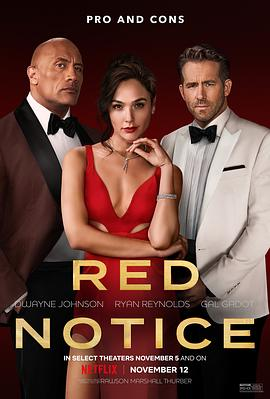

红色通缉令 / Red Notice
又名：红色大贱谍
噱头很大，导出都是trailer，然而就是个老套的爆米花电影+盗墓元素。角色选的都还不错。
作品信息
| 导演 | 罗森·马歇尔·瑟伯 |
| 编剧 | 罗森·马歇尔·瑟伯 |
| 主演 | 道恩·强森 / 瑞安·雷诺兹 / 盖尔·加朵 / 里图·阿亚 / 克里斯·迪亚曼托普洛斯 / 伊万·姆巴科普 / 温琴佐·阿马托 / 帕斯卡尔·佩塔尔迪 / 塞思·迈克尔斯 / 塞巴斯蒂安·拉格 / 盖·纳尔杜利 / 罗森·马歇尔·瑟伯 / 安东尼·贝勒索 / 丹尼尔·伯哈特 / 约瑟夫·波多尔斯基 / 马丁·哈里斯 / 汤姆·蔡 / 罗伯特·克洛特沃西 / 詹姆斯·威廉·巴拉德 / 埃尔文·费利西达 / 杰伊·古铁雷斯 / 艾德·希兰 / 雷·西格尔 / 罗伯特·廷斯利 / 维多利亚·佩吉·沃特金斯 |
| 类型 | 喜剧 / 动作 / 惊悚 / 犯罪 |
| 制片国家/地区 | 美国 |
| 语言 | 英语 |
| 上映日期 | 2021-11-12(美国) |
| 片长 | 117分钟 |
| IMDb | tt7991608 |
说过什么
2021-11-13 09:38:02
广播 · 看过 · ★★★☆☆
噱头很大，导出都是trailer，然而就是个老套的爆米花电影+盗墓元素。角色选的都还不错。
最后一次看到是 2026-08-01T11:05:12+10:00 · 豆瓣原页